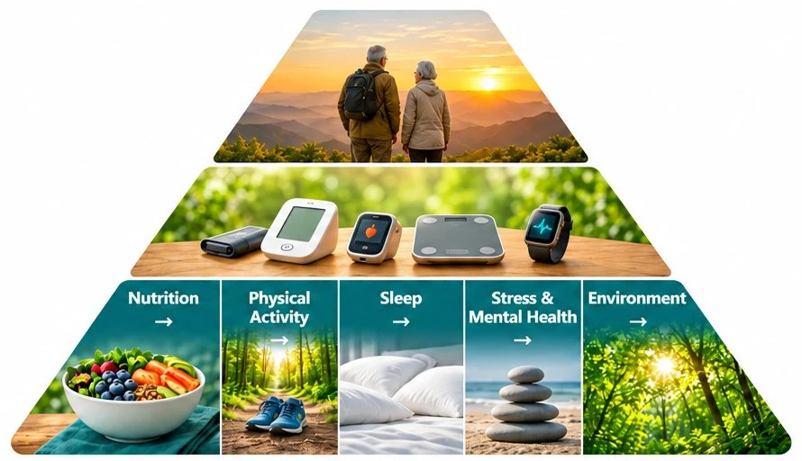

Dwa produkty, jedna zasada: najpierw rzetelne dane i jawne pochodzenie każdej informacji, dopiero potem wnioski.
toClarity
Zrozumiała informacja o zdrowiu
Online
Zamienia wiele godzin rozmów ekspertów w jasne, uporządkowane odpowiedzi. Pokazuje, w czym eksperci się zgadzają, gdzie się różnią i co dopiero się wyłania.

Pięć fundamentów zdrowia, które regularnie wracają w rozmowach ekspertów
Synteza wypowiedzi ponad 100 ekspertów zdrowia
Pięć fundamentów zdrowia: odżywianie, aktywność fizyczna, sen, stres i zdrowie psychiczne, środowisko
Powiązania z układami organizmu, schorzeniami i zdrowym starzeniem
Pod spodem: pipeline AI od nagrań do ustrukturyzowanej bazy wiedzy
Projekt stale rozwijany. Wkrótce:
Monitor spożycia z wyliczaniem mikroelementów
Sugestie dla osób dbających o zdrowy tryb życia, zmęczonych szumem niepotwierdzonych informacji
Podcasty, które pomagają lepiej zrozumieć temat
Cognitive Core
Strażnik inteligentnego domu dla Home Assistant
W produkcji u mnie
Narodził się z potrzeby lepszej kontroli nad domem i braku narzędzia, które by ją dawało.
Twój dom z Home Assistant zaczyna mówić ludzkim językiem: wiesz, co masz, co działa, co przestało działać i dlaczego. Bez grzebania w logach i bez ryzyka, że coś zmieni się samo.
Porządek w urządzeniach. Każde urządzenie ma rozpoznaną rolę, a Ty ją zatwierdzasz albo poprawiasz.
Spokój o pompę ciepła. Widzisz, jak efektywnie pracuje i czy nie dzieje się z nią nic niepokojącego.
Pełna kontrola. Nic nie zmienia się bez Twojej zgody, a dane zostają w domu.
Trwa duża aktualizacja. W przygotowaniu:
Przyczyna, nie tylko objaw. Gdy kilka urządzeń przestaje działać naraz, dostaniesz wyjaśnienie, co je łączy, zamiast listy alarmów.
Prawdziwy obraz energii. Pobór, produkcja PV i koszt według Twojej taryfy, z jasną informacją, gdy danych brakuje.
Podpowiedzi zamiast domysłów. Konkretne rekomendacje z uzasadnieniem, które wdrażasz tylko wtedy, gdy się na nie zgodzisz.
v1.6.0działa w moim domu
100%decyzji zatwierdza człowiek
local-firstdane zostają w domu
Jak pracuję
Najpierw dane, potem wnioski
Sprawdzam kompletność i pochodzenie danych, zanim cokolwiek policzę. Pomiar, wartość wyliczona i szacunek są zawsze oznaczone osobno.
Kryteria przed testem
Progi sukcesu i sposób oceny ustalam, zanim zobaczę wyniki. Dzięki temu wynik nie jest dopasowywany do oczekiwań.
Małe kroki z bramkami
Każde wydanie ma zakres, testy, plan wycofania i zapis wdrożenia. Decyzje i dowody trafiają do jednego rejestru.
AI rekomenduje, człowiek decyduje
Model wyjaśnia i proponuje. Zmiany w systemach wymagają jawnej zgody i są rozdzielone od warstwy AI.
O mnie
Senior Business Analyst z ponad 10 latami doświadczenia. Pracuję na granicy biznesu i technologii: analizuję procesy, projektuję integracje i dowożę rezultaty. Doświadczenie w telekomunikacji, e-commerce, FinTech i doradztwie biznesowym. Wspieram zespoły w strategii, transformacji cyfrowej i skalowaniu operacji, a własne produkty pozwalają mi sprawdzać te metody w praktyce.
Wybrane projekty
Doradztwo w zakresie infrastruktury sieciowej
Projekt zaawansowanej infrastruktury WiFi z dokumentacją dwujęzyczną, architekturą sieciową i metodyką pilot-first z etapami zatwierdzenia. Wdrożenie w trakcie.
Pipeline w Pythonie do deduplikacji i reorganizacji plików. 112 tys. zasobów przetworzonych, 85 GB odzyskanych. Zero strat danych, pełna ścieżka audytu, architektura gotowa na kolejne przebiegi.
Analiza istniejących procesów, projektowanie nowych rozwiązań, integracje API, przygotowanie do wdrożeń. Wsparcie w transformacji cyfrowej i skalowaniu.
AI i automatyzacja
Pipeline'y LLM, prompt engineering, strukturyzacja danych. Od koncepcji do produkcji, tak jak w toClarity: skalowalne systemy syntezy wiedzy.
Dane, energia i smart home
Audyt jakości danych z Home Assistant, liczników i taryf. Monitoring tylko do odczytu, jasne granice pomiaru, bez sterowania bez zgody. Doświadczenie z Cognitive Core.
Doradztwo techniczne
Infrastruktura sieciowa, bezpieczeństwo, projektowanie systemów. Dla organizacji rozwijających nowe projekty lub audytujących istniejące rozwiązania.